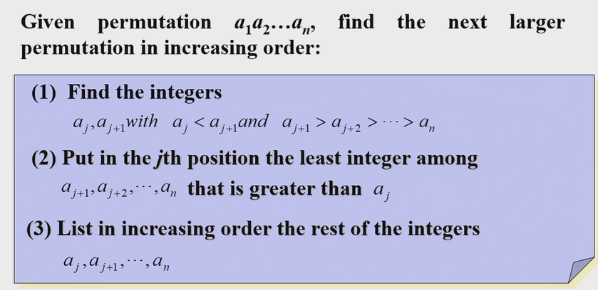

6.Counting
Basic Principles
基本原理 \(|S\cup T|=|S|+|T|-|S\cap T|\)
\(|S\times T|=|S|\times|T|\)
Eg1. \(|A|=m,|B|=n,f:A\to B\)
- \(n^m\) functions 给A中每一个元素选一个对应的
- \(n(n-1)(n-1)\dots(n-m+1)\) one-to-one functions(\(m\leq n\)). 从B中选m个元素(有顺序),对应于A
- \(n! S(m,n)\) onto functions(\(m \geq n\))
\(S(m,n)\) is Stirling number of the second kind. the number of ways of dividing A into n subsets. We can use inclusion-exclusion principle $$ n!S(m,n)=\sum_{k=0}^n (-1)^kC_n^k (n-k)^m $$ 减去不是满射的，第k项表示我们在\(B\)中钦定\(k\)个不被映射到的,其他的\(n-k\)个随便被A映射
Pigeonhole principle(!)
Eg1. In a party of 2 or more people,there are 2 people with the same number of friends in the party. You can't be your own friend and friendship is mutual
Pigeons: n people;
Pigeonholes: Possible number of friends:0,1,2...n-1. But 0 and n-1 can't coexist.(n-1 means one knows everyone in the party, because friendship is mutual, then everyone must have a friend). so only n-1 possible number of friends
The generalized pigeonhole principle: \(n\) elements in \(k\) boxes, there is at least one box containing at least \(\lceil n/k\rceil\) elements
关键是构造\(n,k,\lceil n/k\rceil\)中的两个。注意\(n\)的计算, 如\(k=2,\lceil n/k\rceil=3\), 则n最小可为5
Eg2. Show that among any n + 1 positive integers not exceeding 2n there must be an integer that divides one of the other integers
\(a_i=2^{k_i}q_i\), \(q_i\) is odd. pigeons:\(q_1,q_2 \dots q_{n+1}\) pigeonholes: n odd possitive integers less than 2n. So two of \(q_1,q_2 \dots q_{n+1}\) must be equal.
Eg3. During a month with 30 days, a baseball team plays at least one game a day, but no more than 45 games. Show that there must be a period of some number of consecutive days during which the team must play exactly 14 games.
对于连续区间的问题，考虑构造前缀和。Let \(s_i\) be the sum of games played from the 1st day to i th day. We need to prove that \(\exist i,j(i<j),s_j-s_i=14\) . Let \(s_0=0\)
Pigeons: \(s_0,s_1,s_2\dots s_{30}, s_0+14,s_1+14,s_2+14,\dots s_{30}+14\). (62 Elements) 书上的写法好像没有考虑到\(s_0\)?
Pegeonholes: values \(0 \leq s_i,s_i+14 \leq 45+14=59\) (60 elements)
So there must be equal numbers in \(s_1,s_2\dots s_{30}, s_1+14,s_2+14,\dots s_{30}+14\)
- 法一：加入\(s_0\)
- 法二: 分情况(如果刚好一一对应,那么一定有一个)（如果没有，根据鸽笼原理得出)
Eg4. Every sequence of \(n^2 + 1\) distinct real numbers contains a subsequence of length n + 1 that is either strictly increasing or strictly decreasing
\((i_k,d_k)\) denotes the length of increasing and decreasing sequence start with \(a_k\).
Suppose that \(\max \{i_i,d_k\}\leq n\),with \(n^2\) pairs and \(n^2+1\) elements, there must exist two equal pairs.
\(i_s=i_t,d_s=d_t\). if \(a_s>a_t\), then \(a_s,a_t \dots\) forms a decreasing sequence of length \(i_t+1\) starting with \(i_s\).
For every integer n,there there is a multiple of n whose decimal expansion contains only 0s and 1s
For every integer n, consider n+1 integers\(1,11,111\dots,111111(n+1 \ 1s)\)
Divide them by n, there are at most n different reminders. so at least two of these numbers have the same reminder.
Suppose that \(a\equiv b \pmod n,a<b\) then \(b-a\) is a multiple of n and its decimal expansion contains only 0s and 1s.(etc.11111-11=11100) ref
Mutual friend and enemies . Ramsey number.
Ramsey number
https://math.mit.edu/~apost/courses/18.204_2018/ramsey-numbers.pdf
The minimum number of people at a party such that for all cases, there are either m mutual friends or n mutual enemies (people=vertices, relation=edges, color the edge in two color,the least number of vertices that a graph must have so that in any red-blue coloring, there exists either a red \(K_s\) or a blue \(K_t\)(\(K_n\)代表完全图))
\(R(2,n)=n\)
\(R(3,3)=6, R(3,4)=9,R(4,4)=18,R(3,5)=14\)
证明思路: - 先证明\(R(s,t)>n-1\), 只需要找一个\(n-1\)个点的,既没有\(K_s\)也没有\(K_t\)的图 - 再证明\(R(s,t)=n\). 一般要选一个点\(v\)出来，考虑剩下的和\(v\)是friends 还是enemies
\(R(s,t)\leq R(s,t-1)+R(s-1,t)\)
if \(R(s,t-1),R(s-1,t)\) is even, \(R(s,t)\leq R(s,t-1)+R(s-1,t)\)
proof: see pdf
etc \(R(3,4)\leq R(3,3)+R(2,4)-1=9\)
choose \(A\), in the rest 8 people
- \(\geq 6\) friends ,\(R(3,3)=6\), so 3 mutual friends
- \(\geq 4\) enemies\(R(2,4)=4\), so 4 mutual enemies
- \(5\) friends+3 enemies(impossible for every vertice,because 5*9=45,but each friends is count twice, the result should be even) so there exist at least one vertex that satisfy case 1,2.
Permutations and Combinations
Combinatorial Proofs
证明组合恒等式的时候，可以构造组合的例子。注意格式!
- 用两种不同的方法计数同一个集合(double counting proof)
- 证明两个集合之间存在双射(Bijective proof)
Pascal's Identity. \(\(\binom{n+1}{k}=\binom{n}{k-1}+\binom{n}{k}\)\)
Proof:（Double Counting). \(A=\{x,a_1,\dots a_n\}\) The left side is the number of subsets of size k from set A. For the right side, the subsets of size k
- contains \(x\)
- not contain \(x\)
Vandemonde's Identity: $$ \binom{m+n}{r}=\sum_{k=0}^r\binom{m}{r-k}\binom{n}{k} $$ Proof:（Double Counting)
Corrollary \(\binom{2n}{r}=\sum \binom{n}{r}^2\)
$$ \binom{n+1}{r+1}=\sum_{j=r}^n\binom{j}{r} $$ Proof: Left side: r+1 ones in a 01 sequence of length n+1.
Right side: j+1 is the position of the last 1-bit in the sequence
Generalized Permutations
r-circle
\(P(n,r)/r\) . r people sit in a round table of n chairs.
如果把顺时针/逆时针的看做一种，那么方法数是\(\begin{cases} \frac{P(n,r)}{2r} ,r \geq 3\\ \frac{P(n,r)}{r},r \leq 2\end{cases}\). 注意只有1或2个人的时候
r-combination
\(C(n+r-1,r-1)\) (插板法)
\(x_1+x_2+\dots x_r=n\) 非负整数解个数
变形:
-
\(x_1+x_2+\dots x_r=n,x_i\geq 2\). Let \(y_i=x_i+2\)
-
\(x_1+x_2+\dots x_r \leq n\). Let \(x_1+x_2+\dots x_r+x_{r+1}=n,x_{r+1}\geq 0\).
- \(x_i\leq k\). 减去\(x_i \geq k+1\)的情况
Distributing objects into boxes
-
distinguishable boxes. distinguishable objects. $$ \frac{n!}{n_1!n_2!\dots n_k!} (\text{the kth boxes have\ }n_k\text{\ objects}) $$
-
indistinguishable boxes. distinguishable objects.
(The second kind of Strling number: n objects in m same boxes, no empty boxes) $$ \boxed{S(n,m)=\frac{1}{m!}\sum_{k=0}^m (-1)^kC_m^k (m-k)^n} $$
If we allow boxes to be empty, then the number will be \(\sum_{k=1}^m S(n,k)\) 如果题目没有特别说明，默认是可以为空的，要对斯特林数求和!
- distinguishable boxes. indistinguishable objects. (r-combination) \(C(n+r-1,r-1)\)
- indistinguishable boxes. indistinguishable objects. (brute force)
(HW) How many ways are there for a horse race with 4 horses to finish if ties(平局) are possible.
- no tie \(4!\)
- 2 tie(aabb+aabc) \(C(4,2)\text{(choose 2 horses to be the first two)}+C(4,2)\times 3!\)
- 3 tie(aaab) \(C(4,3)\times 2\)
- 4 tie \(1\)
Algorithms generating permutations and combinations
next-permutation

124653-> 125346